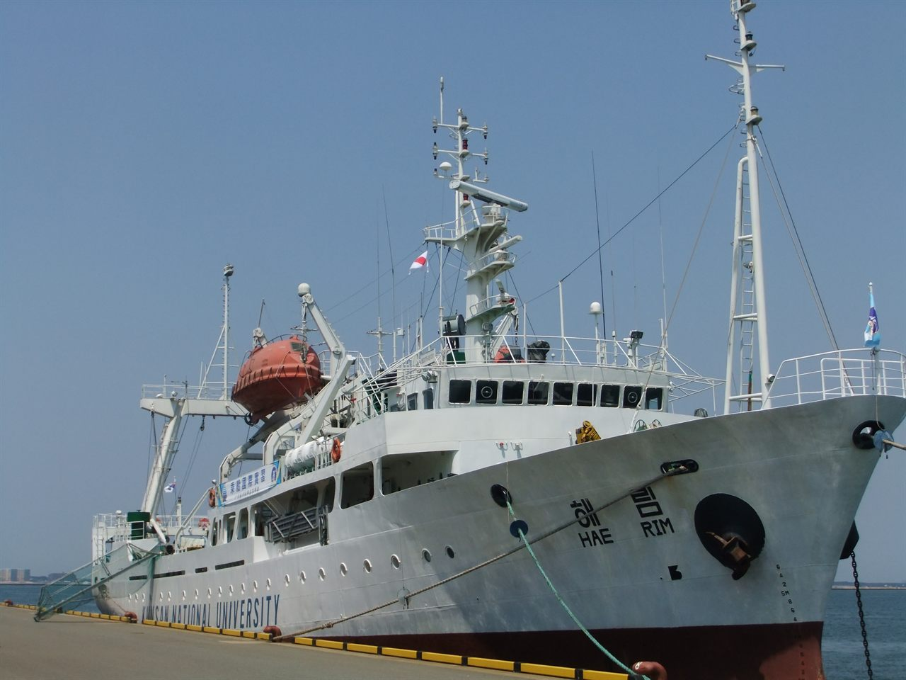

국립군산대학교는 전라북도 군산시에 있는 국립대학입니다. 군산 미룡동의 미룡캠퍼스와 새만금캠퍼스 두 곳을 두고 있고, 미룡캠퍼스는 단일 캠퍼스 면적 기준으로 국가거점·국립대 가운데 넓은 편에 속한다고 소개됩니다. 해양 실습선을 운영할 만큼 해양·수산 분야의 뿌리가 있는 학교이기도 합니다.
2027학년도 수시 원서접수는 2026년 9월 7일부터 11일까지였고 이미 마감됐습니다. 그런데 이번 마감 결과가 눈에 띕니다. 지원자가 전년 대비 40.5% 늘었습니다. 학령인구가 줄어드는 국면에서 지방 국립대의 지원자가 1년 만에 4할 가까이 증가한 것은 흔한 일이 아닙니다. 고1·고2 자녀를 두신 가정이라면 이 흐름 자체를 한 번 읽어 둘 필요가 있습니다.
발표된 마감 결과부터 보겠습니다
보도된 2027학년도 수시모집 마감 결과는 다음과 같습니다.
- 수시 전체 — 1,888명 모집에 10,307명이 지원해 5.46대 1. 전년도 4.09대 1에서 크게 올랐습니다.
- 학생부교과전형 — 1,314명 모집에 7,441명 지원, 5.66대 1.
- 학생부종합전형 — 374명 모집에 2,453명 지원, 6.56대 1.
- 실기·실적전형 — 52명 모집에 158명 지원, 3.04대 1.
여기서 먼저 보셔야 할 것은 경쟁률이 아니라 비중입니다. 수시 모집 인원의 3분의 2 이상이 학생부교과에 몰려 있습니다. 이 대학을 목표로 한다면 전략의 출발점은 논술도 면접도 아니고 학교 내신이라는 뜻입니다.
학생부교과 — 일반학생과 지역인재로 나뉩니다
국립군산대학교의 학생부교과전형은 일반학생 계열과 지역인재 계열로 나뉘어 운영됩니다. 지역인재는 해당 권역 고등학교를 다닌 학생에게 별도의 문을 하나 더 열어 주는 제도입니다. 같은 성적이라도 지원할 수 있는 칸이 하나 더 생긴다는 점에서, 해당되는 학생에게는 실질적인 이득입니다.
지역인재와 관련해 지금 고1·고2가 알아 두셔야 할 기준이 하나 있습니다. 2027학년도 지역인재 지원 자격은 해당 권역 고등학교에서 전 교육과정(3년)을 이수한 학생을 기준으로 합니다. 흔히 이야기되는 중학교 과정까지 해당 지역에서 다녀야 한다는 강화된 요건은 2028학년도부터 적용됩니다. 지금 고1 이하라면 이 점을 미리 확인해 두셔야 합니다. 전학이나 이사 계획이 있다면 특히 그렇습니다.
또 하나, 이 대학의 학생부교과 안에는 학생부 성적만으로 뽑는 모집단위와 면접을 함께 보는 모집단위가 섞여 있습니다. 지원하려는 학과가 어느 쪽인지에 따라 준비할 것이 달라지므로, 학과 단위로 확인하셔야 합니다.
학생부종합 — 모집 인원은 적고 경쟁률은 더 높습니다
학생부종합은 374명으로 교과의 3분의 1이 안 되는 규모인데, 경쟁률은 6.56대 1로 교과보다 높게 나왔습니다. 인원이 적을수록 경쟁률이 올라가는 것은 자연스러운 일이지만, 지원자 입장에서는 모집단위별 편차가 크다는 사실이 더 중요합니다.
실제로 이번 마감에서 학생부종합 간호학과는 14.85대 1, 일어일문학과 14.00대 1, 법경찰학과 12.00대 1이 나왔습니다. 같은 전형 안에서도 어떤 학과는 평균의 두 배가 넘습니다. 학생부교과에서도 무역학과 9.44대 1, 사회복지학과 9.40대 1, 간호학과 9.25대 1로 상위권이 형성됐습니다.
이 숫자들이 알려 주는 것은 단순합니다. “군산대 경쟁률이 몇 대 1”이라는 평균값은 내 아이의 지원에 거의 쓸모가 없습니다. 봐야 할 것은 지원하려는 학과 한 줄입니다.
왜 지원자가 40% 늘었을까
대학 측은 지원자 증가의 배경으로 학생 중심 교육 혁신, 무료 셔틀버스 운영, 기숙사 시설 개선 등을 들었습니다. 통학과 주거는 지방 대학을 고민하는 가정에서 성적 다음으로 크게 걸리는 문제이니, 납득이 가는 설명입니다.
여기에 더해 최근 몇 년의 흐름도 함께 보실 필요가 있습니다. 지역 국립대는 등록금 부담이 상대적으로 낮고, 지역인재 전형이라는 별도의 문이 있으며, 의학·보건 계열과 공학 계열에서 지역 정원이 논의되는 축에 있습니다. 수도권 상위권만 바라보던 가정들도 “거점·지역 국립대를 실질적인 선택지로 놓고 계산한다”는 쪽으로 조금씩 움직이고 있습니다. 군산대의 이번 수치는 그 흐름이 한 학교에서 뚜렷하게 드러난 사례로 읽힙니다.
남은 일정 — 실기고사와 합격자 발표
이미 지원한 수험생이라면 앞으로의 일정이 더 중요합니다. 보도된 일정은 다음과 같습니다.
- 실기고사 — 10월 29일. 실기·실적전형 지원자에게 해당됩니다.
- 최초 합격자 발표 — 11월 24일 오후 6시 이전.
- 충원 합격자 발표 및 등록 — 12월 24일 ~ 12월 30일.
- 정시 원서접수 — 2027년 1월 4일 ~ 1월 7일.
- 정시 합격자 발표 — 2027년 2월 5일.
참고로 2027학년도 수능은 2026년 11월 19일에 치러집니다. 즉 수시 최초 합격자 발표는 수능 이후입니다. 수능최저학력기준이 적용되는 전형에 지원했다면, 원서를 냈다는 것으로 수능 준비를 놓아서는 안 되는 이유가 여기 있습니다.
고1·고2가 지금 점검할 것
- 내신을 주 무기로 삼을 수 있는가. 이 대학 수시의 3분의 2 이상이 학생부교과입니다. 내신을 놓고 다른 카드를 찾는 전략은 이 학교에서는 폭이 좁습니다.
- 지역인재 자격에 해당하는가. 2027학년도 기준은 해당 권역 고등학교 3년 이수입니다. 2028학년도부터는 중학교 과정까지 보는 요건이 적용되니, 고1 이하라면 지금 확인해 두세요.
- 지원하려는 학과가 면접을 보는가. 학생부교과 안에서도 면접을 함께 보는 모집단위가 있습니다. 학과 단위로 확인해야 합니다.
- 학과별 경쟁률을 직접 찾아봤는가. 전형 평균이 5대 1이어도 지원하려는 학과는 14대 1일 수 있습니다.
- 수능을 최저 맞출 만큼이라도 가져갈 것인가. 합격자 발표가 수능 뒤에 있다는 사실만 기억하셔도 겨울 계획이 달라집니다.
마무리하며
국립군산대학교의 2027학년도 수시를 한 줄로 줄이면 이렇습니다. 내신으로 승부하는 학교이고, 지역인재 자격이 있으면 문이 하나 더 열리며, 학과별 편차가 전형 평균보다 훨씬 크다. 지원자가 1년 만에 40% 넘게 늘었다는 것은 반가운 소식이기도 하지만, 뒤집으면 내년에는 같은 성적으로 같은 결과를 기대하기 어려울 수 있다는 신호이기도 합니다.
그러니 고1·고2 자녀를 두셨다면 대학 이름부터 고르지 마시고, “우리 아이가 3년 내신을 어디까지 끌고 갈 수 있는가”와 “지역인재 자격이 있는가” 두 가지에 먼저 답을 내려 보시기 바랍니다. 그 답이 정해지면 지원할 수 있는 전형이 자연스럽게 절반으로 줄어듭니다.
와와 학습코칭센터에서는 아이의 학년과 성적 흐름에 맞춰 목표 대학과 전형을 함께 정리해 드립니다. 내신으로 갈지 수능을 함께 가져갈지부터 막막하시다면, 가까운 센터에서 상담을 신청해 보세요.
※ 본 글은 국립군산대학교 2027학년도 수시모집 마감 관련 언론 보도와 대학 입학처 안내를 바탕으로 정리했습니다. 인용한 모집 인원·지원자 수·경쟁률과 일정은 보도 시점에 발표된 내용입니다. 학생부교과·학생부종합 전형의 수능최저학력기준 적용 여부와 등급 조건, 학생부 반영 교과와 등급 환산 방식, 지역인재전형의 세부 지원 자격과 대상 권역, 면접을 실시하는 모집단위의 전체 목록과 면접 반영 비율·실시 일자, 모집단위별 세부 모집 인원, 정원 외 전형의 조건은 확인하지 못해 이 글에 담지 않았습니다. 확인되지 않은 숫자와 기준은 기재하지 않았습니다. 사진은 2013년에 촬영된 것으로 현재 모습과 다를 수 있습니다. 세부 사항은 모집요강에서 확정되며 변경될 수 있으므로, 반드시 국립군산대학교 입학처의 2027학년도 수시모집요강 원문에서 본인 지원 모집단위 기준으로 최종 확인하시기 바랍니다.